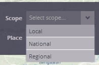

Setting the scope of analysis
The scope of geographical analysis represents the level of spatial and thematic detail of explored data.

You can choose between three available scopes in the menu. The following scopes are available in the current version of the PUMA application:
- Scope: Local provides the most detailed view of all available scopes into geographically based information. Results of urban mapping performed by GISAT are used as a data source for this scope.
- Scope: National represents the middle-scale analysis at the level of particular countries. This scope is filled in by the Urban expansion dataset provided by the Annemarie Schneider team.
- Scope: Regional provides the lowest level of detail, giving the user an overview of the whole region (in this case, East Asia and Pacific). AsiaPop population grids are the source data for this scope.
So far, each scope of analysis is represented only by one dataset. However, in general, more different datasets could be suitable for analysis in the same scope.